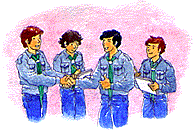
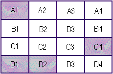
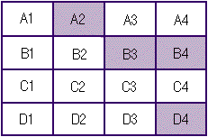
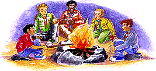

|
|
Type of activity: Game Duration: 2 hours Place: Troop meeting place Participants: The Troop
The 19th World Scout Jamboree invites Patrols from all countries to experience a moment of togetherness allowing you to get to share and get to know the richness and variety of our world's cultures. It is an excellent opportunity for us to renew our commitment to world peace. In keeping with this objective, a number of workshops relating to peace and inter-cultural understanding have been planned for this event and will be open to Jamboree participants. We present this game to you and your Troop as a means of introducing you to the theme, and so that you can explore it. Introduction The seeds of peace are within us and our daily lives. We are frequently forced into conflictive situations which draw us into arguments with others, so it is important for each of us to ask himself: What is the major obstacle to finding a solution? How do I behave at these times? What are my strategies? How do others react? These are some of the questions you will have to answer when you find yourselves in the fictitious circumstances of our game, DISPUTED TERRITORIES. Before the activity To prepare this game, the adults in charge will have to follow these steps: 1.Make up a map of plots of land according to the following instructions: a) On a piece of cardboard 100 cm by 50 cm draw the map of an imaginary campsite. To trace the lines you can guide yourselves using the information found in Appendix 4. We recommend that you include on the board the geographical characteristics required by the game, such as the ravine in sector A1, the old barn in B4, the waterfall of C3 and the lagoon of A3. b) 16 territories have to be clearly defined, and labelled with their corresponding numbers (Appendix 1). c) Following the suggestions in Appendix 1, small coloured flags (i.e. blue, yellow, red, green) are placed in each plot. These can be made from pins and bits of coloured cardboard or cloth. The idea is that it should be easy to change their position on the board. 2. Those in charge should prepare four different copies of the Backgrounds with the information found in Appendix 4 (one for each Patrol or team). 3. In addition, a copy of the "Personal Evaluation Guidelines" from Appendix 3 has to be prepared for all participants. NOTE: It is of fundamental importance that the Scouts do not know the rules before they start the game.
The necessary transactions will be freely developed amongst the teams. The idea is that each one tries to get as close as possible to their proposed goal, even if this means they do not get hold of all the required territories. Suggested duration: 30 minutes. 7. Once time available for negotiations has run out, they are finalised and the adults in charge distribute the "Personal Evaluation Guidelines" (Appendix 3) to all the participants so they can answer the questionnaire. Suggested duration: 5 to 10 minutes. 8. At the end of this stage, the activity leader invites the youngsters
to present their results. Each team tells the Troop what their initial aim
was, specifying whatever they managed to achieve at the end of the negotiation
period. The adults in charge can also go through the questions of the evaluation
guidelines aloud and encourage the Scouts to express their opinions freely. Suggested duration: 20 minutes.
We hope that this game has contributed to a greater understanding within the Troop of how to constructively confront conflicts that might arise in the future. We must go on and continue the search for new methods of co-operation, helping us to be prepared to sacrifice certain expectations in order to achieve others. DESIGNATION OF TERRITORIES SUGGESTED SOLUTION
 PERSONAL EVALUATION GUIDELINES
2. Why do you qualify them that way?
4. Why do you see it that way? 5. Were you left with the territories necessary
for your goal?
6. Did you acquire the number of sites you
wanted, including the adjacent ones?
7. How do you perceive the relationship
between that acquired and that handed over by your team?
8. How did you deal with confrontations? 9. How did you feel applying that strategy?? Appendix 4 BACKGROUND 1 The campsite is characterised by an irregular topography. You think this is an opportunity to develop a series of raised constructions, which you have been preparing for throughout the whole year. The sites that have been allocated to you are dispersed across the board. These are A1, C4, D1 and D2..  BACKGROUND 2 You have been preparing yourselves throughout the whole year to build a Nature Trail in your sector at this camp. You are planning to place signs along the trail, naming all the species that are found there. The sites that have been allocated are A3, B1, C1 and C2.
In site A3 there is a wood where the camp's only lagoon is to be found and there it is possible to construct a natural observatory for animals. This place is fundamental to the success of the Patrol's aims. You would also like to get sites B3, A4 and B4.
BACKGROUND 3 You have been preparing a technological project to create electric power. The idea is to bring light to a sector by installing a dynamo connected to a water wheel. The sites that have been defined are A4, B2, C3 and D3.
In site C3 there is an ideal waterfall for the installation of this machinery. Moreover, the dynamo has the capacity to illuminate a total of 6 sites, hence it would be ideal to create a complete block, adding sites B3, C2 and D2.
BACKGROUND 4 Your aim is to carry out services for the local community and you have made a series of contacts with their representatives. The sites that have been defined for you are A2, B3, B4 and D4.  In order to achieve your aims, you need a spacious sector where you can install a storage room for materials. You do not need 4 sites, but you should keep B4 where there is an old barn that would be useful as a storage room. Ideally you would also obtain sites adjacent to B4, that is, A4 and C4.
Type of Activity: Workshop Duration: 2 hours Place: Troop meeting place or at camp Participants: The Troop Nowadays, there is a consensus in the world that all people are equal in dignity and rights. However, they are fundamentally different in their cultural and personal expressions. Within this context peace is of great importance as the only atmosphere in which it is possible to achieve happiness, and which permits individual development at the same time as the expression of diversity. The 19th World Scout Jamboree is an event that aims to unite young people from different countries under the theme "Building Peace Together". That is why we want each one of you to reflect and ask yourselves questions such as: What does peace mean? How is it possible to promote it within our own surroundings? Through this workshop, we suggest a COMMITMENT TO PEACE which is already practised by other Scouts from around the planet. Before the activity
We recommend covering an extensive variety of conflicts, including those that affect the international, regional, national, local and /or personal sphere. The activity 1. Presentation. The Troop meets in plenary session and those in charge share the information they have compiled. Our suggestion is to consider the order from a global to a personal sphere, demonstrating that peace is indispensable in all levels. The participants can feel free to join the dialogue, and together they can identify all the different meanings of the concept. These should be noted down on the flip chart. To facilitate the conversation, the activity leader might suggest some examples:
2. The adults in charge ask the participants to tell the Troop why they think peace is important. When all have spoken their minds they strengthen the idea which is expressed in the introduction of this material concluding that happiness is only possible within an environment of peace. Can we reach a state of happiness if we are immersed into constant conflicts such as wars, confrontations, and discussions? 3. By brainstorming ideas the participants should come up with concrete actions to generate a peaceful atmosphere. The challenge consists of imagining what can be done in each case. This is also registered on the flip chart. Suggested duration: 20 minutes 4. After this reflection, the Troop leaders invite the participants to make a COMMITMENT TO PEACE. In order for the Scouts to be able to formulate a commitment, they ask them to concentrate on the personal level. Next, the following instructions are handed out:
If suitable, cases can be quoted: a) Someone who wants to commit himself/herself to the struggle for peace in the world must think of an alternative that allows him/her to unite his/her actions with those of others in a collective effort e.g. the incorporation into an organisation working to promote peace. b) Someone who wants to make a commitment that is manifested in a class at school must identify the attitudes of his/her schoolmates that offend and those that make him/her feel good. Next, he/she has to think about his/her different reactions in each situation. Lastly, concrete actions should be established to collaborate to the creation of an environment of peace such as respecting the other when he or she is expressing his or her opinion, receiving criticisms in a positive manner, promoting negotiation during decision making, not threatening physically or verbally under any circumstance, etc.
We suggest planning each action previously and establishing a deadline for each stage. Suggested duration: 15 minutes. 5. Personal activity. The adults in charge hand out pen and paper to each of the participants. They write down their COMMITMENT TO PEACE, the concrete actions, and deadlines. It is fundamental that the Scouts feel free to choose a place to calmly draw up the commitment. During this time, the Troop leaders should be at reach for any question. The participants can also resolve doubts between themselves, in couples or groups of three or four. There is nothing to stop people who want to make a joint commitment. Suggested duration: 15 minutes. 6. Patrol activity. When all have finished, the activity leader separately invites the Patrols to meet. Accompanied by an adult in charge, the members share their respective commitment in turns. We recommend allowing between 2 or 3 minutes for each person and a moment extra so that the rest of the Patrol can ask questions. NOTE: The questions might help each one to clarify their ideas, in order to gather further detail and complete his or her commitment. The exchange will also allow analysis as to what extent an objective is realistic. Suggested duration: 30 minutes. 7. Troop activity. The Patrols meet again in plenary session. The activity leader asks if there are voluntaries that wish to present their commitment to the rest of the Troop. The listeners can ask questions or make constructive suggestions. Those in charge signal that all can count on support and the help from his/her Patrol or Troop to reach their objective. NOTE: Experience has shown that a debate might be produced which questions whether a determined objective, action or date is feasible. With a lot of care those in charge should make sure that it all does not end up being a whole meeting focused on one single individual. To conclude, the Troop leaders emphasise that this cause is personal: each one is responsible for his/her commitment. That is why it is a special challenge. Suggested duration: 20 minutes. 8. Patrol activity. The Patrols meet again separately. Each Scout receives a small envelope where he or she should put his/her commitment. After it is sealed the name of the person should be written on it. The activity leader picks up all the envelopes and puts them all in the Troop archive, where it is kept for the youngsters. Observations for the adults in charge
We hope that this activity has familiarised you with the different dimensions of peace. The idea is to understand that the building of peace is a task that we can collaborate on day by day, by putting our values into practice. This activity has been selected and adapted from the book "Games for peace and Human Understanding", published by the Asociación de Guías y Scouts de Chile.
|